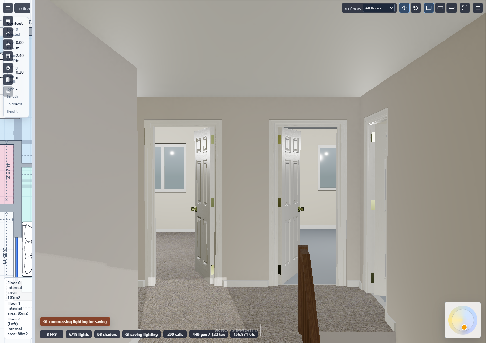
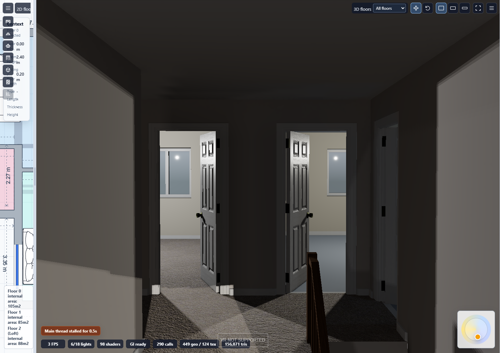

Same camera, original Springfield lamps, zero ambient fill, exposure 0 EV, identical baked probe lighting. Only Light shadows changed. The shadowed view blocks direct lamp illumination across doorways, room boundaries and surfaces. These captures use probe lighting, not the progressive surface refinement.


The atlas completed 108 faces for 18 authored lamps; six lamps contributed to this view. Four existing geometry-merge warnings occurred; no additional browser errors were recorded. HUD frame rates were captured during preparation and saving, so they are not steady-state benchmarks. Build and 14 shadow/cache tests passed.
Three enabled upstairs lamps have saved falloff 0 (clamped to 0.5), and another has falloff 1. Their slowly decaying light remains an additional source of broad illumination. Authored lamp values were left unchanged in this comparison. Refinement status now has its own visible indicator; GI ready alone refers to the probe system.
Raw comparison measurements · Earlier diffuse-refinement investigation